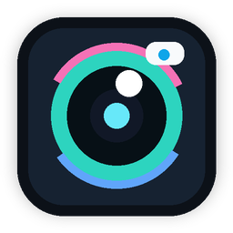
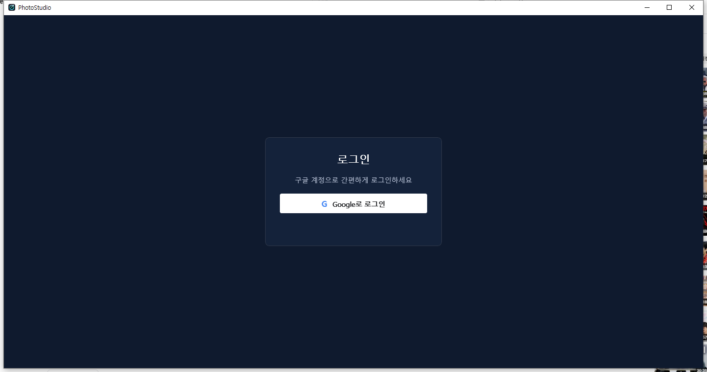
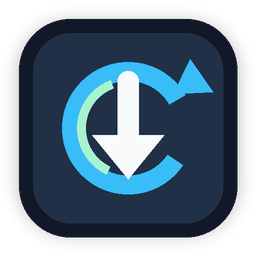

사진 불러오기
파일 또는 폴더 단위로 사진을 추가하고, 라이브러리에서 필요한 항목만 선택해 작업할 수 있습니다.

PhotoStudioWindows 사진 편집 도구
여러 장의 사진을 불러오고, 필터와 프레임, 크기 조정, 메타데이터 표시를 한 화면에서 처리하는 데스크톱 사진 편집 프로그램입니다.

개별 사진 편집과 선택한 사진 일괄 처리를 같은 흐름 안에서 사용할 수 있도록 구성했습니다.
파일 또는 폴더 단위로 사진을 추가하고, 라이브러리에서 필요한 항목만 선택해 작업할 수 있습니다.
밝기, 대비, 채도와 함께 필름 느낌의 필터, 프레임 텍스트, 크기 조정 옵션을 적용할 수 있습니다.

업데이터가 함께 배포되어 새 버전이 올라오면 설치 파일을 내려받아 프로그램을 교체할 수 있습니다.
처음 실행부터 내보내기까지 자주 쓰는 순서대로 정리했습니다.
현재 캡처는 로그인 화면입니다. 로그인 후 같은 창 안에서 라이브러리, 미리보기, 필터, 내보내기 영역이 이어집니다.
PhotoStudio와 Updater는 함께 설치됩니다. 업데이트 확인 시 GitHub의 manifest 정보를 읽고, 현재 버전보다 높은 설치 파일이 있으면 내려받아 교체합니다.
Release와 Debug 빌드 모두 PhotoStudio 실행 파일과 같은 폴더에 Updater.exe가 배치됩니다.
manifest.json의 최신 버전, 다운로드 URL, SHA-256 값을 확인해 업데이트 파일을 검증합니다.
업데이트가 완료되면 PhotoStudio를 다시 실행해 새 버전으로 이어서 사용할 수 있습니다.
아래 버튼을 누르면 GitHub에 배포된 NSIS 설치 파일을 직접 다운로드합니다.